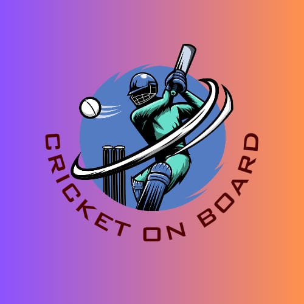

<!-- Bottom Menu Bar -->
<div class="bottom-menu">
    <!-- Left Side: Follow Tournament & Search -->
    <i class="fas fa-eye" onclick="location.href='FollowTournament.html'"></i>
    <i class="fas fa-search"></i>

    <!-- Center: CricOnBoard Logo Button -->
    <div class="center-logo" onclick="location.href='index.html'">
        
    </div>

    <!-- Right Side: Notification & Profile -->
    <i class="fas fa-bell" onclick="location.href='Notification.html'"></i>
    <i class="fas fa-user" onclick="location.href='Profile.html'"></i>
</div>
